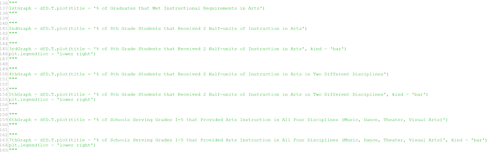
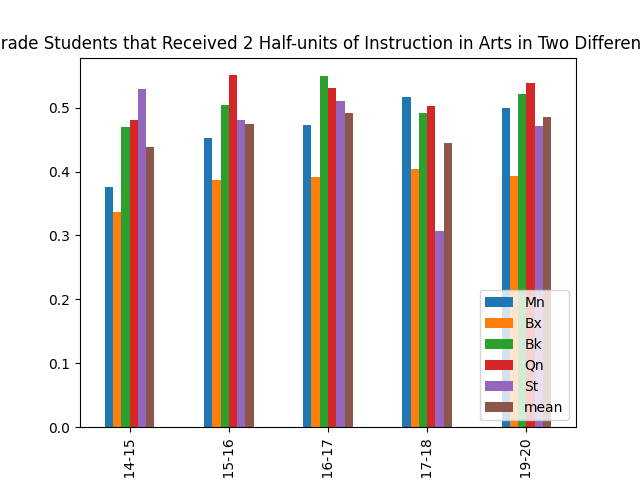

By: Deshonte McLeod
Hello and welcome to my project for CSCI 39542. The focus of this project is researching art programs in NYC schools from K-12 (including visual arts, music, and theater) and seeing the number of students that have learned from sufficient art programs in their schools, comparing years from the past decade and each of the 5 boroughs, which would determine the area that best teaches their students artistically as well as displaying the rise/fall of the art programs of each school through the number of students who've studied the four disciplines of art.
The sources I will be using for this project are Art Reports from the NYC open data site at https://opendata.cityofnewyork.us/, and the data used will be from the school years 2014-15, 2015-16, 2016-17, 2017-18, and 2019-20. Their links will be provided at the end of this web page. I will be comparing and contrasting 4 sections from each of these Art Reports, including the % of Graduates that Met Instructional Requirements in Arts, the % of 8th Grade Students that Received 2 Half-units of Instruction in Arts, the % of 8th Grade Students that Received 2 Half-units of Instruction in Arts in Two Different Disciplines, and the % of Schools Serving Grades 1-5 that Provided Arts Instruction in All Four Disciplines (Music, Dance, Theater, Visual Arts).
I wrote the code through Python, using the Pandas library to select and aggregate. Because all of the datasets were needed in order to create each graph, instead of having multiple python files that would each output a different graph or table, I used the same file and changed the print statements to output each graph needed for the project to save time. The main driver function I used for aggregation is my distToBoro function shown here:

This function takes a dataframe as an argument and essentially changes the district number in each column to the respected borough they are apart of using the for loop. It then collects the means of each borough for each sections that is being used in the project. Finally it creates a dataframe that shows each borough and uses the collected means as data.
After doing this for all 5 datasets, I then used concatenation to combine columns of each that looked at the same section and combined them into one dataframe that look at all of the years for that specific section (4 dataframes in total for the 4 sections we are examining). I also added the means to the bottom of each dataframe for comparison to NYC overall. This is shown here:
The last part of my code is the plotting part where I used the Mathlib library to plot each of the newly created dataframes:

That is the basic run-down of my code. Now without further adieu, let us see our first section.
So for the first section of our analysis, we are looking at the % of Graduates that met instructional requirements in arts. These are high school graduates who have completed at least 2 credits in the arts. Here we have a line graph of the data:
The most obvious aspect of this graph is the large dip that Queens has from 2014-15 to 2015-16 along with its large increase from 2015-16 to 2016-17. However this seems to be the only thing notable about this graph.
Minus the hiccup that Queens had from 2014 to 2017, out of all of the graphs, this one has the closest data in which all of the boroughs are very close together, and they all seem to have a very slight increase over the few years. Additionally, the mean is consistently in the 0.998 to 1 range, meaning that there is only a microscopic number of NYC high school seniors who did not graduate with at least 2 credits and that almost every graduate has met their instructional requirements in the arts, and that this will likely be the case for future years.
For the second section of our analysis, we are looking at the % of 8th grade students who have received 2 half-units of instruction in the arts. A half-unit means that the child took half a school year in the class, meaning that 2 half-units is when the child had two semesters of an art class, in which the art classes are not necessarily the same. Here is the bar and line graph for the data:
The first thing to take note of is that the Bronx is consistently the lowest out of the 5 boroughs in this graph and unlike the other 4 boroughs, does not have a school year where it has the most 8th grade students with 2 half-units of arts. The most erratic borough, on the other hand, is Staten Island, as it went from having the largest percentage in 2014-15, to having the smallest percentage in 2017-18, to rising back to the middle closer to the mean in 2019-2020.
The other four boroughs seem to share a similar pattern amongst themselves, in which they share a slight increase throughout the years, which seems to halt between 2016 and 2017, but continues to increase after 2018. This is the same for the mean as well, which went from a little less than 87.5% in 2014 to almost 92.5% in 2020. This shows that the majority of 8th grade students have received 2 half-units of art instruction and that number is slightly increasing, with only the Bronx being slightly below the rest of the boroughs.
The next section of analysis is the % of 8th Grade Students that Received 2 Half-units of Instruction in Arts in Two Different Disciplines. This is different from the previous section in that the credits have to be from two different art classes (ex. Art and Dance, Dance and Music, Art and Theater, Music and Theater, etc.) Here is the bar and line graph of the data:

The first thing to note is that this data is very similar to the data shown before, with is similarities being that the Bronx is consistently the lowest, Staten Island has a large dip from 2016-2018 and rises back up in the 2019-20 school year, and the other three boroughs are fighting for the top percentage. Other than the Bronx and Manhattan, however, there does not seem to be a consistent increase in the data over the years, as most of the data seems to dip either in the 2015-16 or 2016-17 school years.
The biggest difference between this data and the data before is that this data seems to have much smaller numbers compared to the previous. This is understandable, as the previous data is about students who have taken two semesters of art class where both classes can be the same or different, while this data is about students who have taken two semesters of art class where both classes MUST be different. Although this isn’t much of a problem, this does raise an issue that some schools may not have more than one discipline of art in their curriculum, which would mean that these schools need to add a discipline or two in order to provide variety to its students, especially for those who do not like the only art class that is present in their school.
Now onto our last section of analysis, we have the % of Schools Serving Grades 1-5 that provides art instruction in all of its four disciplines, including music, dance, theater, and visual arts. This one is pretty much self explanatory by its title, so let’s look at the bar and line graph for each:
Now, at a first glance, I believe that the biggest visual aspect of both graphs is the extremely large gap between Queens and the other four boroughs, with Queens consistently having at least 20% more than the highest of the other four boroughs for every year. This illustrates that schools in Queens are much more competent in providing much variety in the arts for its elementary students, as shown by how much larger the percentage is compared to the rest of the boroughs.